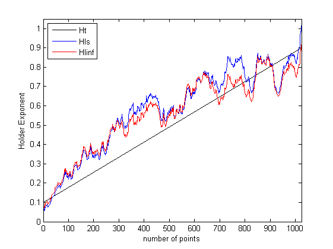
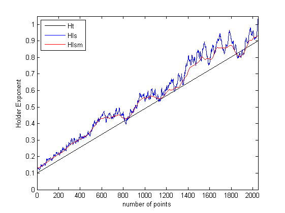
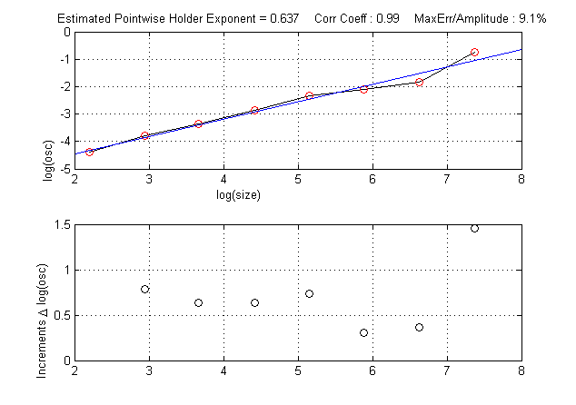

| FRACLAB Functions |
|
Computes the Pointwise Holder exponent based on a method that uses oscillations for a 1D signal
H = estimOSC1DH(x,base,alpha,beta)
H = estimOSC1DH(...,'Regression type')
H = estimOSC1DH(...,'Propertyname',Propertyvalue)
H = estimOSC1DH(x,base,alpha,beta) Estimates the Holder function, H of the input signal x, using a least square regression. The parameters alpha and beta are real values in (0:1) which characterize the neighborhood of each point where the exponent is computed. For each point the Holder exponent is estimated using a neighborhood of points.
|
The neighborhood of points are included in [base^rhomin:base^rhomax] |
H = estimOSC1DH(...,'Regression type') Estimates the Holder function, H, using a specific type of regression. The Regression Type can be choosen from the list below :
| Specifier | Regression Type |
|---|---|
| 'ls' | Least Square (default) |
| 'linf' | Lower Limit |
| 'lsup' | Upper Limit |
| 'ml' | Maximum Likelihood |
| 'lapls' | Lepskii Adaptive |
| 'wls' | Weighted Least Square |
| 'pls' | Penalized Least Square |
H = estimOSC1DH(...,'Propertyname',Propertyvalue) returns the estimator H applying the specified property settings. The Property setting can be choosen from the list below:
| Property | Purpose | |
|---|---|---|
| 'timeinstant' |
The Single Time Exponent estimation is computed for a specific time instant. A graphic window
is displayed showing in abscissa the log-scale, and in ordinate the log of the oscillations.
This allows to select a region in the log-log plot where the points on this graph are well aligned.
The regression line is displayed in blue and the value of the estimated exponent is display at the top.
The timeinstant value must be included in the interval [1:length(x)] | |
| 'average' |
The Averaging estimation uses a specific number of neighbors to compute an average of oscillations.
Averaging allows to get more robust results, but as the number of points increases the estimation becomes smoother.
| |
| 'zones' |
The Segmentation in a specific number of zones is realized on the estimation obtained by
regression. Then, the Holder estimation is aligned on the trend of the mean values of the segmented signal.
If 'zones' is not specified, the default value is zones = 10. |
N = 1024; t = linspace(0,1,N); Ht = eval('0.1+0.8*t');
x = mBmQuantifKrigeage(N,Ht,10);
Hls = estimOSC1DH(x,2.1,0.1,0.3);
Hlinf = estimOSC1DH(x,2.1,0.1,0.3,'linf');
figure; plot(Ht,'k'); hold on;
plot(Hls); plot(Hlinf,'r'); legend('Ht','Hls','Hlinf',2);
xlabel('number of points');ylabel('Holder Exponent');xlim([0 N])

N = 2048; t = linspace(0,1,N); Ht = eval('0.1+0.8*t');
x = mBmQuantifKrigeage(N,Ht,10);
Hls = estimOSC1DH(x,2.1,0.1,0.3);
Hlsm = estimOSC1DH(x,2.1,0.1,0.3,'average',[0.5,1]);
figure; plot(Ht,'k'); hold on;
plot(Hls); plot(Hlsm,'r'); legend('Ht','Hls','Hlsm',2);
xlabel('number of points');ylabel('Holder Exponent');xlim([0 N])

N = 2048; t = linspace(0,1,N); Ht = eval('0.1+0.8*t');
x = mBmQuantifKrigeage(N,Ht,10);
Hlst = estimOSC1DH(x,2.1,0.1,0.3,'timeinstant',1500);

[1] C. Tricot, "Curves and Fractal Dimension" Springer-Verlag (1995).
[2] O. Barrière, "Synthèse et estimation de mouvements Browniens multifractionnaires et
autres processus à régularité prescrite. Définition du processus autorégulé multifractionnaire et applications", PhD Thesis (2007).
| |
estimGQV2DH | estimOSC2DH | |